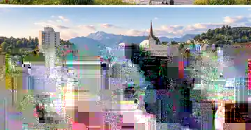
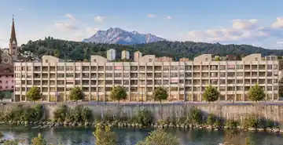
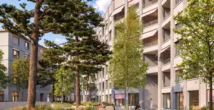

Stadt und Wasser
Direkt an Reuss und Kleiner Emme wohnen und trotzdem schnell im Zentrum von Luzern sein.

Reusszopf · Luzern
Mitten in Luzern. Direkt am Wasser. 82 Wohnungen und 12 Gewerbeflächen an einem Ort, an dem Reuss und Kleine Emme zusammenkommen.
Angebot entdecken →Projekt

Wo Reuss und Kleine Emme aufeinandertreffen, entsteht der Reusszopf. 82 Wohnungen und 12 Gewerbeflächen schaffen neuen Raum zum Wohnen und Arbeiten. Mitten in einem gewachsenen Quartier und gut verbunden mit der Stadt Luzern.

Der Reusszopf soll mehr sein als eine neue Überbauung. Menschen werden hier wohnen, arbeiten, Kundinnen und Kunden empfangen oder ihre Ideen weiterentwickeln. Rund 1'400 m² Gewerbefläche bieten Raum für unterschiedliche Nutzungen und Unternehmen, die diesen Ort mitprägen möchten.
Wohnungsangebot
Entdecken Sie die verfügbaren Wohnungen und finden Sie das Zuhause, das zu Ihnen passt.
Gewerbeangebot
Am Reusszopf entsteht ein neuer Ort zum Wohnen und Arbeiten. 82 Wohnungen, 12 Gewerbeflächen, Wasser direkt vor der Tür und kurze Wege in die Stadt. Rundherum leben, lernen und arbeiten Menschen. Genau das macht diesen Standort interessant.
Wer hier sein Unternehmen ansiedelt, wird Teil eines Ortes, der sich weiterentwickelt. Kundinnen und Kunden aus dem Quartier. Mitarbeitende aus der Stadt und der Region. Schulen und Hochschule in der Nähe. Eine gute Anbindung mit ÖV, Velo und Auto.
Praxis, Dienstleistung, Büro, Atelier oder eine Idee, an die heute noch niemand gedacht hat. Entscheidend ist nicht, ob Sie in eine Schublade passen. Entscheidend ist, ob der Reusszopf zu Ihrem Unternehmen passt.
Standort
Rund um den Seetalplatz entsteht Schritt für Schritt ein neues urbanes Zentrum. Neue Wohnungen, Arbeitsplätze, Bildung, Einkauf, Gastronomie und Freizeit kommen zusammen. Der Reusszopf liegt genau an diesem Übergang: in der Stadt Luzern, direkt am Wasser und wenige Minuten vom Zentrum entfernt.
Wasser vor der Tür, Schulen im Quartier, Einkauf in mehreren Richtungen und kurze Wege in die Stadt.
Direkt an Reuss und Kleiner Emme wohnen und trotzdem schnell im Zentrum von Luzern sein.
Kindergarten, Primarschule, Sekundarschule und Kantonsschule liegen im Quartier oder in unmittelbarer Umgebung.
Bus, Bahn, Velo und Auto: Vom Reusszopf aus führen viele Wege schnell weiter.
Ruopigen Zentrum, 4VIERTEL, Emmen Center und Wohncenter liegen in kurzer Distanz.
Unterwegs ab Reusszopf
Arbeitswerte für die Abstimmung. Vor Publikation werden die Geh und Fahrzeiten ab definitivem Gebäudezugang nochmals geprüft.
Luzern Nord verändert sich. Mit jedem neuen Projekt wächst auch das Umfeld des Reusszopfs.
Der Reusszopf liegt an einer stark frequentierten Achse Richtung Stadt Luzern. Die Lage schafft Präsenz, ohne auf grossflächige Aussenwerbung zu setzen.
Bahnhof, Bus, Velowege und Autobahn liegen wenige Minuten entfernt. Für Mitarbeitende und Kundschaft ist der Standort aus Stadt und Region gut erreichbar.
82 neue Wohnungen entstehen direkt am Reusszopf. Rundherum wächst Luzern Nord mit neuen Bewohnerinnen, Beschäftigten und Studierenden.
Kantonsschule und Hochschule Luzern liegen in der Nähe. Das schafft Nähe zu Nachwuchs, Fachkräften und neuen Ideen.
Am Seetalplatz bündelt der Kanton Luzern rund 30 Standorte in einem neuen Arbeitszentrum für rund 2'000 Mitarbeitende.
Stadtluzerner Adresse und attraktive steuerliche Rahmenbedingungen im Kanton Luzern.
Eigene Parkplätze sind begrenzt. Direkt gegenüber steht das öffentliche Parking des 4VIERTEL zur Verfügung.
Die Anlieferung der Gewerbeflächen ist vorgesehen und baulich geregelt.
Einkauf, Gastronomie, Freizeit, Bildung und neue Arbeitsplätze verdichten sich rund um den Seetalplatz.
Impressionen
Kontakt
Bei Fragen zu einer konkreten Wohnung oder Gewerbefläche finden Sie die zuständige Ansprechperson direkt beim jeweiligen Angebot. Für allgemeine Fragen zum Projekt Reusszopf bin ich gerne für Sie da.